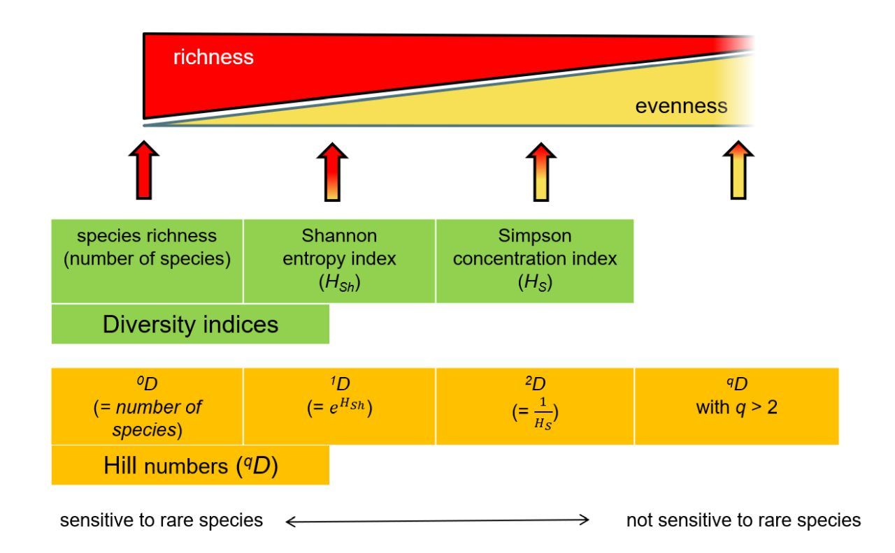

Semana 5: diversidade verdadeira e números de Hill em ecologia de comunidades
módulos de ecologia quantitativa

Slides desta aula
O problema da não-linearidade e da unidade dos índices clássicos
A mensuração da biodiversidade alfa (\(\alpha\)) em nível local é um dos pilares da ecologia quantitativa. por décadas, os ecólogos têm recorrido a índices sintéticos como o índice de shannon-wiener (\(H'\)) e o índice de simpson (\(D\) ou \(1-D\)) para sintetizar o número de espécies (riqueza) e a distribuição de suas abundâncias relativas (equitabilidade) em um único valor numérico [1]. contudo, apesar de sua ampla utilização na literatura científica desde meados do século XX, esses índices clássicos apresentam limitações estatísticas e conceituais profundas que frequentemente levam a interpretações ecológicas equivocadas.
A principal limitação dos índices clássicos é que eles não medem a diversidade diretamente em unidades de espécies. o índice de shannon mede a entropia ou a incerteza da teoria da informação em unidades de nats ou bits, enquanto o índice de simpson mede a probabilidade de que dois indivíduos sorteados ao acaso pertençam à mesma espécie [35]. como consequência dessa natureza matemática, ambos os índices exibem um comportamento não-linear em relação às alterações na composição da comunidade.
Para ilustrar esse problema fundamental, considere o princípio de duplicação (doubling property). imagine uma comunidade florestal perfeitamente uniforme composta por 10 espécies de árvores, onde cada espécie possui exatamente a mesma abundância relativa (\(p_i = 0,10\)). se dividirmos essa floresta hipotética ao meio e introduzirmos no segundo fragmento outras 10 espécies inteiramente novas, com as mesmas abundâncias relativas, a intuição biológica dita que a diversidade da nova comunidade dobrou. no entanto, os índices estatísticos não refletem essa duplicação direta:
a riqueza de espécies (\(S\)) dobra de 10 para 20.
o índice de shannon (\(H'\)) aumenta de \(\ln(10) \approx 2,302\) para \(\ln(20) \approx 2,995\), um incremento de apenas 30%.
a diversidade de simpson (\(1-D\)) passa de \(0,900\) para \(0,950\), um aumento residual de apenas 5,5%.

Como \(H'\) cresce de forma logarítmica e \(1-D\) é assintótico próximo de 1,0, nenhum desses índices permite quantificar a magnitude percentual de ganho ou perda de biodiversidade entre diferentes ecossistemas. uma comunidade com \(H' = 3,0\) não é duas vezes mais diversa do que uma comunidade com \(H' = 1,5\). essa não-linearidade compromete graves análises de valoração ambiental, estudos de serviços ecossistêmicos e a formulação de políticas públicas de conservação.

A unificação matemática por Mark Hill e Lou Jost
Para resolver o impasse das unidades não intuitivas e restaurar a linearidade na mensuração da biodiversidade, o ecólogo e estatístico mark hill demonstrou em 1973 que os índices clássicos de diversidade pertencem a uma mesma família de equações paramétricas baseada em médias ponderadas de abundâncias relativas. posteriormente, o físico e ecólogo lou jost (2006) formalizou essa unificação, estabelecendo o conceito de diversidade verdadeira (true diversity) ou números de hill (\(^qD\)).
A diversidade verdadeira converte qualquer índice de entropia ou probabilidade em um número efetivo de espécies (effective number of species). o número efetivo de espécies corresponde ao número de espécies igualmente abundantes (perfeitamente equitativas) que seria necessário para produzir o mesmo valor numérico do índice estatístico observado.
a fórmula geral dos números de hill para uma comunidade contendo \(S\) espécies é dada pela seguinte expressão matemática:
\[^qD = \left( \sum_{i=1}^{S} p_i^q \right)^{\frac{1}{1-q}}\]
onde: * \(S\) é a riqueza total de espécies observada na comunidade.
\(p_i\) é a proporção de indivíduos pertencentes à \(i\)-ésima espécie (\(p_i = n_i / N\)).
\(q\) é o parâmetro de ordem da diversidade, um número real não negativo (\(q \ge 0\)) que atua como uma “trava de sintonia” para determinar o grau de sensibilidade do índice em relação às espécies raras ou abundantes.
Quando a fórmula dos números de hill é aplicada, o resultado é expresso estritamente em unidades de espécies, satisfazendo rigorosamente o princípio de duplicação: se a diversidade de um ecossistema dobra, o valor de \(^qD\) é exatamente multiplicado por 2.
A família de números de Hill e a ordem \(q\)
o parâmetro \(q\) permite explorar a estrutura da comunidade em três pontos-chave ou ordens principais (\(q = 0, q = 1, q = 2\)), refletindo a transição gradual do foco das espécies raras para as espécies dominantes.
| Ordem (\(q\)) | Denominação | Expressão matemática de conversão | Sensibilidade às abundâncias relativas | Interpretação ecológica |
|---|---|---|---|---|
| \(q = 0\) | Riqueza de espécies | \(^0D = S\) | Totalmente insensível (todas as espécies têm peso igual a 1) | Número total de espécies observadas no local |
| \(q = 1\) | Espécies típicas / freqüentes | \(^1D = \exp(H') = \exp\left(-\sum p_i \ln p_i\right)\) | Ponderação proporcional exata às abundâncias relativas | Número de espécies abundantes/comuns na comunidade |
| \(q = 2\) | Espécies dominantes | \(^2D = \frac{1}{D} = \frac{1}{\sum p_i^2}\) | Ponderação desproporcional para espécies muito abundantes | Número de espécies altamente dominantes |
Número de Hill de ordem zero (\(q = 0\))
para \(q = 0\), o expoente \(q\) anula o efeito das abundâncias relativas (\(p_i^0 = 1\) para todo \(p_i > 0\)). a equação simplifica-se para:
\[^0D = \sum_{i=1}^{S} 1 = S\]
a diversidade de ordem zero (\(^0D\)) é simplesmente a riqueza observada de espécies. ela atribui o mesmo peso tanto a uma espécie hiperdominante representada por 90% dos indivíduos quanto a uma espécie rara representada por apenas um indivíduo amostrado (singleton).
Número de Hill de ordem um (\(q = 1\))
quando \(q \to 1\), o termo \(1 / (1-q)\) na fórmula geral torna-se indefinido. contudo, aplicando o limite matemático de l’hôpital quando \(q\) se aproxima de 1, a equação converte-se exatamente na exponencial da entropia de shannon-wiener (\(H'\)):
\[^1D = \lim_{q \to 1} ^qD = \exp\left(-\sum_{i=1}^{S} p_i \ln(p_i)\right) = \exp(H')\]
a diversidade verdadeira de ordem um (\(^1D\)) pesa cada espécie em proporção exata à sua abundância na comunidade. ela pode ser interpretada biologicamente como o número de espécies “típicas” ou “frequentes” no ecossistema. se uma comunidade possui \(H' = 2,302\), sua diversidade verdadeira é \(^1D = \exp(2,302) = 10,0\) espécies efetivas.
Número de Hill de ordem dois (\(q = 2\))
para \(q = 2\), a fórmula pondera as abundâncias de forma quadrática (\(p_i^2\)), reduzindo a contribuição das espécies raras a valores negligenciáveis. a equação reduz-se ao inverso do índice de dominância de simpson (\(D\)):
\[^2D = \frac{1}{\sum_{i=1}^{S} p_i^2} = \frac{1}{D}\]
a diversidade verdadeira de ordem dois (\(^2D\)) mede o número de espécies “muito abundantes” ou “dominantes” na comunidade. se o índice de dominância de simpson de um local for \(D = 0,25\), sua diversidade de ordem dois será \(^2D = 1 / 0,25 = 4,0\) espécies efetivas dominantes.
Perfil continuado de diversidade de hill
em vez de analisar \(q = 0, q = 1, q = 2\) isoladamente, lou jost e anne chao demonstraram que é possível calcular \(^qD\) para um espectro contínuo de valores de \(q\) (por exemplo, de \(q = 0\) até \(q = 3\)), gerando o chamado perfil de diversidade de hill (hill diversity profile).

a geometria e a inclinação da curva do perfil de diversidade de hill fornecem uma caracterização visual completa da estrutura de abundância da comunidade:
- curva estritamente horizontal (\(^0D = ^1D = ^2D = S\)): indica uma comunidade com equitabilidade perfeita (\(J' = 1,0\)), onde todas as espécies possuem exatamente o mesmo número de indivíduos.
- curva com declive suave: indica uma comunidade moderadamente equitativa, com pouca dominância.
- curva com declive acentuado (queda brusca de \(q=0\) para \(q=2\)): reflete uma comunidade com alta hiperdominância de poucas espécies e grande quantidade de espécies raras.
portanto, a variação relativa entre \(^0D\), \(^1D\) e \(^2D\) permite isolar o efeito da equitabilidade sem a necessidade de calcular índices acessórios adicionais como o \(J'\) de pielou.
Exemplo numérico resolvido passo a passo
para consolidar o entendimento da conversão de índices brutos em números efetivos de espécies, considere três comunidades hipotéticas (saco a, saco b e saco c), cada uma amostrada com exatamente 100 indivíduos (\(N = 100\)):
- comunidade a (hiperdominante): 4 espécies. \(n_1 = 85, n_2 = 10, n_3 = 4, n_4 = 1\).
- comunidade b (desigual moderada): 4 espécies. \(n_1 = 50, n_2 = 30, n_3 = 15, n_4 = 5\).
- comunidade c (perfeitamente uniforme): 4 espécies. \(n_1 = 25, n_2 = 25, n_3 = 25, n_4 = 25\).
passo 1: cálculo das proporções relativas (\(p_i\))
- comunidade a: \(p_1 = 0,85; p_2 = 0,10; p_3 = 0,04; p_4 = 0,01\).
- comunidade b: \(p_1 = 0,50; p_2 = 0,30; p_3 = 0,15; p_4 = 0,05\).
- comunidade c: \(p_1 = 0,25; p_2 = 0,25; p_3 = 0,25; p_4 = 0,25\).
passo 2: cálculo dos índices estatísticos clássicos
- shannon (\(H'\)):
- \(H'_A = -[0,85\ln(0,85) + 0,10\ln(0,10) + 0,04\ln(0,04) + 0,01\ln(0,01)] = 0,544\).
- \(H'_B = -[0,50\ln(0,50) + 0,30\ln(0,30) + 0,15\ln(0,15) + 0,05\ln(0,05)] = 1,145\).
- \(H'_C = -4 \times [0,25\ln(0,25)] = \ln(4) = 1,386\).
- dominância de simpson (\(D = \sum p_i^2\)):
- \(D_A = 0,85^2 + 0,10^2 + 0,04^2 + 0,01^2 = 0,7225 + 0,0100 + 0,0016 + 0,0001 = 0,734\).
- \(D_B = 0,50^2 + 0,30^2 + 0,15^2 + 0,05^2 = 0,2500 + 0,0900 + 0,0225 + 0,0025 = 0,365\).
- \(D_C = 4 \times (0,25^2) = 4 \times 0,0625 = 0,250\).
passo 3: conversão para números de hill (\(^qD\))
| Comunidade | Riqueza (\(^0D = S\)) | Shannon (\(H'\)) | Diversidade de Shannon (\(^1D = \exp(H')\)) | Simpson (\(D\)) | Inverso de Simpson (\(^2D = 1/D\)) |
|---|---|---|---|---|---|
| Comunidade A | 4 | 0,544 | 1,72 espécies | 0,734 | 1,36 espécies |
| Comunidade B | 4 | 1,145 | 3,14 espécies | 0,365 | 2,74 espécies |
| Comunidade C | 4 | 1,386 | 4,00 espécies | 0,250 | 4,00 espécies |
Interpretação ecológica dos números de hill obtidos
- comunidade a: embora possua 4 espécies físicas (\(^0D = 4\)), a forte dominância da espécie 1 (85%) faz com que ela funcione biologicamente como se contivesse apenas 1,72 espécies equivalentes comuns (\(^1D\)) e 1,36 espécies equivalentes dominantes (\(^2D\)).
- comunidade b: com uma distribuição moderadamente desigual, seus 4 táxons correspondem a 3,14 espécies efetivas comuns e 2,74 espécies efetivas dominantes.
- comunidade c: como a distribuição é perfeitamente uniforme, todas as três ordens de hill coincidem exatamente (\(^0D = ^1D = ^2D = 4,00\)).
Decomposição multiplicativa da diversidade gama em alfa e beta
Outra vantagem crucial dos números de hill é a resolução da partição espacial da biodiversidade regional (diversidade gama, \(^\gamma D\)). whittaker (1960) propôs originalmente que a diversidade gama é o produto da diversidade local (alfa, \(^\alpha D\)) pela renovação de espécies entre locais (beta, \(^\beta D\)):
\[^\gamma D = ^\alpha D \times ^\beta D \implies ^\beta D = \frac{^\gamma D}{^\alpha D}\]
Quando aplicada aos índices brutos de shannon ou simpson, essa relação multiplicativa falha matematicamente porque os índices não são lineares. contudo, Jost (2006) provou que quando \(^\alpha D\), \(^\beta D\) e \(^\gamma D\) são expressos em números de hill, a decomposição multiplicativa de whittaker é rigorosamente válida e consistente para qualquer ordem \(q\) [133, 146].
nesta abordagem:
\(^\alpha D\) (alfa verdadeira): número efetivo médio de espécies por comunidade local.
\(^\gamma D\) (gama verdadeira): número efetivo total de espécies no conjunto regional de comunidades.
\(^\beta D\) (beta verdadeira): número efetivo de comunidades completamente distintas na região.
O valor de \(^\beta D\) varia entre \(1,0\) (quando todas as comunidades possuem exatamente a mesma composição e abundância relativa de espécies) e \(N\) (quando todas as \(N\) comunidades são inteiramente distintas e não compartilham nenhuma espécie).
Aplicação prática no r com pacotes vegan e inext
no ambiente r, o cálculo dos números de hill e a construção dos perfis de diversidade podem ser realizados com os pacotes vegan e iNEXT [2, 131].
script r para cálculo dos números de hill e perfis
# carregamento dos pacotes necessários
library(vegan)
library(tidyverse)
library(iNEXT)
# 1. matriz de abundâncias simuladas dos sacos de lego
lego_mat <- matrix(c(
70, 15, 8, 4, 2, 1, 0, 0, 0, 0, # Saco A (Hiperdominante)
40, 22, 14, 10, 6, 4, 3, 1, 0, 0, # Saco B (Log-normal)
10, 10, 10, 10, 10, 10, 10, 10, 10, 10, # Saco C (Uniforme)
30, 18, 12, 8, 6, 4, 3, 3, 2, 2 # Saco D (Muitas raras)
), nrow = 4, byrow = TRUE)
rownames(lego_mat) <- c("Saco_A", "Saco_B", "Saco_C", "Saco_D")
colnames(lego_mat) <- paste0("Cor_", 1:10)
# 2. cálculo automatizado das três ordens de Hill (q=0, q=1, q=2)
calc_hill <- function(mat) {
q0 <- rowSums(mat > 0) # q=0: Riqueza (S)
H <- diversity(mat, index = "shannon")
q1 <- exp(H) # q=1: exp(Shannon)
D <- rowSums((mat / rowSums(mat))^2)
q2 <- 1 / D # q=2: Inv. Simpson
data.frame(
Comunidade = rownames(mat),
q0_Riqueza = q0,
q1_Exponencial_Shannon = round(q1, 2),
q2_Inverso_Simpson = round(q2, 2)
)
}
tabela_hill <- calc_hill(lego_mat)
print(tabela_hill)
# 3. rarefação e perfil continuo via pacote iNEXT
inext_out <- iNEXT(t(lego_mat), q = c(0, 1, 2), datatype = "abundance")
g_profile <- ggiNEXT(inext_out, type = 1) +
theme_minimal() +
labs(title = "rarefação e extrapolação de hill (q=0, q=1, q=2)",
x = "tamanho da amostra (número de peças)", y = "diversidade verdadeira (^qD)")
print(g_profile)Implicações para conservação e monitoramento ambiental
A adoção dos números de hill no monitoramento ambiental e nos estudos de impacto ambiental (EIA/RIMA) representa um avanço metodológico fundamental:
- comunicação clara com tomadores de decisão: relatórios técnicos podem afirmar diretamente que “a restauração florestal aumentou a diversidade verdadeira do sítio de 3,2 para 8,5 espécies efetivas”, em vez de relatar variações abstratas de entropia de \(H' = 1,16\) para \(H' = 2,14\).
- comparabilidade entre biomas: permite comparar a diversidade de florestas tropicais, savanas e sistemas aquáticos na mesma escala métrica linear.
- detecção precoce de perda de biodiversidade: quedas acentuadas na diversidade de ordem dois (\(^2D\)) indicam a proliferação de espécies invasoras hiperdominantes antes mesmo que ocorra a extinção local de espécies raras (\(^0D\)).
Referências bibliográficas
- Begon, M.; Townsend, C. R.; Harper, J. L. Ecologia: de Indivíduos a Ecossistemas. 4ª ed. Porto Alegre: Artmed, 2007.
- Chao, A.; Gotelli, N. J.; Hsieh, T. C.; Sander, E. L.; Ma, K. H.; Colwell, R. K.; Jost, L. Rarefaction and extrapolation with Hill numbers: a framework for sampling and estimation in species diversity studies. Ecological Monographs, v. 84, n. 1, p. 45-67, 2014.
- Da Silva, F. R.; Gonçalves-Souza, T.; Paterno, G. B.; Provete, D. B.; Vancine, M. H. Análises Ecológicas no R. Recife: Nupeea, 2022.
- Hill, M. O. Diversity and evenness: a unifying notation and its consequences. Ecology, v. 54, n. 2, p. 427-432, 1973.
- Jost, L. Entropy and diversity. Oikos, v. 113, n. 2, p. 363-375, 2006.
- Ricklefs, R. E.; Relyea, R. A Economia da Natureza. 7ª ed. Rio de Janeiro: Guanabara Koogan, 2016.
- Whittaker, R. H. Vegetation of the Great Smoky Mountains. Ecological Monographs, v. 26, n. 1, p. 1-80, 1956.